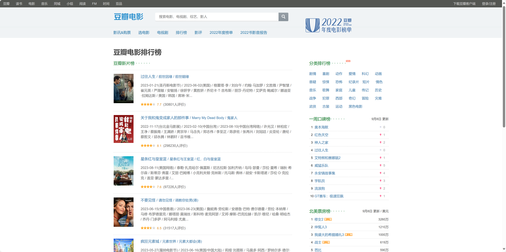

graph LR id1(发送 HTTP 请求) --> id2(网页解析) --> id3(数据提取) --> id4(数据存储)
15 爬虫基础
爬虫基础
爬虫的基本概念
爬虫，即一段自动抓取互联网信息的程序，从互联网上抓取对于我们有价值的信息。
根据爬虫的定义，很容易联想到各类浏览器、搜索引擎，我们日常生活中使用浏览器搜索网站，也可以看作是在使用爬虫爬取信息。只不过，浏览器的搜索结果往往是一整个网页，而我们常常只需要网页中特定的内容。比如，当我们想要获取当前电影市场上评分最高的 250 部电影，我们可以使用浏览器进行搜索。、
爬虫，即抓取互联网信息的自动化程序。借助爬虫，我们可以从互联网上抓取对于我们有价值的信息。
我们很容易从爬虫的定义联想到各类浏览器，似乎我们日常中使用浏览器所进行的搜索活动，与爬虫的工作差不多。这样的想法并没有错，浏览器搜索网站的过程，也可以看作是在使用爬虫获取信息。只不过，浏览器往往会将所有的网页信息都获取下来，而我们常常只需要网页中的特定内容。比如，假设我需要获取当前豆瓣电影网站上，评分最高的 250 部电影的信息，使用浏览器进行搜索时，结果常常是这样的：

仔细观察搜索结果，我们会发现，在这个页面中，除了我们想要的电影信息，还有许多不相干的元素，比如页面右边的各种口碑榜、票房榜等等，而我们只需要电影的相关信息。因此，我们可以尝试使用爬虫来从该页面中获取到我们想要的电影信息（电影的名称、排行、评分、评价人数、影评），并且整理成为如下图所示的表格。
一、爬虫的概念
Python 爬虫从本质上来说，就是一种自动化程序，被设计用来在互联网上获取特定的信息。它模仿人类在网页上进行浏览的行为，可以在短时间内处理大量的网页和数据。Python 爬虫通常可以用于从网页中抓取数据、分析信息、搜索特定内容等场景。
这样一来，我们似乎整理出了爬虫程序的基本运行方式，即：
- 请求库(HTTP 请求)：首先，爬虫使用 HTTP 请求库
requests获取网页的 HTML 源代码。 - 网页解析：接下来，使用 HTML 解析库
BeautifulSoup对获取到的网页源代码进行解析。 - 数据提取：使用标签解析、
XPath、CSS选择器来从 HTML 源代码中提取所需的数据。 - 数据存储：最后，将提取到的数据存储在本地文件、数据库或其他的数据存储方式中。
根据爬虫的基本运作方式，我们也就了解了学习爬虫的一般步骤。首先，我们要了解什么是 HTTP 请求，什么是 HTML 文档。随后，我们就可以开始学习如何使用 HTTP 请求库来获取网页的基本数据。最后，我们再掌握解析网页数据，并从中提取关键信息的方法。另外，为了更高效地获取数据，简化爬虫的开发过程，我们还将了解主流的爬虫框架，学习其构成及使用方法。
二、爬虫伦理
为了在使用爬虫时不触犯法律风险，我们就需要了解爬虫伦理。
爬虫伦理是指在进行网络爬虫任务时应遵循的道德和法律规范。因为爬虫可能会对目标网站产生一定的影响，开发者应该遵循以下几个伦理原则：
- 尊重网站规则
- 避免过度请求
- 尊重隐私
- 遵循法律法规
- 避免滥用
- 保护目标网站
robots.txt 文件
robots.txt 文件是一个用于指导网络爬虫如何爬取以及是否允许爬取网站内容的标准文件，这个文件通常位于网站的根目录下。
我们可以打开任意一个网站的根目录，在其域名后添加 /robots.txt 来访问。
下面是一个简单的 robots.txt 文件示例：
这个文件的结构为：
User-agent：这个部分指定了要针对哪个爬虫或用户代理设置规则。通常使用一个星号 * 来表示适用于所有爬虫，或者指定爬虫的名称或代号。
Disallow：这个部分规定了爬虫不允许访问的页面或目录。例如，Disallow: /private/ 表示不允许爬虫访问以 /private/ 开头的所有页面。
Allow：与Disallow相对应，这个部分规定了允许访问的页面或目录。通常不是所有的爬虫都支持这个指令。
Crawl-delay：这个部分指定了爬虫爬取网站页面的延迟时间，以秒为单位。例如，Crawl-delay: 5 表示爬虫每隔5秒才能请求一个页面。
链接解析
URL，也就是我们常说的网址，它的正式名称是“统一资源定位符”，它是互联网上的路标，指向了我们所需要的资源。因此，要学习爬虫，就要了解什么是 URL。我们把一个网址分成四个部分来说明，以 https://movie.douban.com/top250?filter=unwatched 为例，分别是：
- 安全传输协议：
https:// - 主域名：
movie.douban.com - 子链接：
/top250 - 筛选规则：
?filter=unwatched
一、传输协议
1. HTTP 的概念
首先，让我们一起来了解一下，什么是 HTTP 协议。
在前面对爬虫的介绍中，我们讲到，爬虫程序会模拟人类的行为，向浏览器发送请求，与服务器建立连接。在这一步中，与服务器建立连接的行为，就使用到了 HTTP 协议。
HTTP 即 Hypertext Transfer Protocol(超文本传输协议)，是一种用于在客户端与服务器之间的传输数据的请求 - 响应协议。比如，我们在浏览网页时，浏览器与服务器之间遵循的传输协议，通常就是 HTTP 协议。
HTTP 通常会显示不安全，例如 http://www.moe.gov.cn/，如果网站受到攻击，密码容易泄露。
随着互联网的不断发展，HTTP 协议正在逐渐被淘汰，HTTPS 协议已成为越来越多网站的标配，为用户提供更为安全和可靠的网络环境。
graph LR id1(客户端) -- HTTP 协议 --> id2(服务器)
2. HTTP 的请求与响应
(1) HTTP 请求
客户端要使用 HTTP 协议向服务器发送请求，就要遵循 HTTP 的请求方法。HTTP 协议支持多种请求方法以实现获取数据、创建数据、删除数据等功能。在爬虫中，最常用的就是 GET 方法。
GET 方法主要用于获取数据，比如当我们浏览某一个网页时，浏览器就会像服务器发送 GET 请求，用以获取页面数据。
一个 HTTP 请求通常由请求行、请求头、请求体三个部分组成，其中，请求体常常用来向服务器传输数据，因此 GET 方法，通常没有请求体。下面是一个 GET 请求的示例。
GET /top250 HTTP/1.1<!-- 请求行(Request Line) -->
Host: movie.douban.com<!-- 请求头(Request Headers) -->
User-Agent: Mozilla/5.0 (Windows NT 10.0; Win64; x64) AppleWebKit/537.36 (KHTML, like Gecko) Chrome/94.0.4606.71 Safari/537.36
Accept: text/html,application/xhtml+xml,application/xml;q=0.9,image/avif,image/webp,image/apng,*/*;q=0.8,application/signed-exchange;v=b3;q=0.9
Accept-Language: en-US,en;q=0.9
Connection: keep-alive
<!-- 空行 -->
<!-- 请求体(Request Body)-->在上面的例子中，HTTP 请求的结构如下：
- 请求行(Request Line)
- 请求方法：
GET - 资源路径：
/top250 - 协议版本：
HTTP/1.1
- 请求方法：
- 请求头(Request Headers)
- 主机名(Host)：
movie.douban.com - User-Agent：
Mozilla/5.0 (Windows NT 10.0; Win64; x64) AppleWebKit/537.36 (KHTML, like Gecko) Chrome/94.0.4606.71 Safari/537.36 - 可以接受的响应内容类型(Accept)：
text/html,application/xhtml+xml,application/xml;q=0.9,image/avif,image/webp,image/apng,*/*;q=0.8,application/signed-exchange;v=b3;q=0.9 - 语言首选项(Accept-Language)：
en-US,en;q=0.9 - 连接状态(Connection)：
keep-alive
- 主机名(Host)：
- 空行(Blank Line)：空行用于分隔请求头部和请求体。
- 请求体(Request Body)：
GET请求通常没有请求体，因此此处为空。
graph LR id1(HTTP 请求) --> id2(请求行) id1 --> id3(请求头) id1 --> id4(请求体)
(2) HTTP 响应
当服务器接收到客户端发出的 HTTP 请求后，会根据请求返回 HTTP 响应。类似的，HTTP 响应也由三个部分组成：状态行、响应头、响应体。观察下面的例子，这是一个完整的 HTTP 响应。
HTTP/1.1 200 OK<!-- 状态行(Status Line) -->
Date: Sat, 28 Aug 2023 12:00:00 GMT<!-- 响应头(Response Headers) -->
Server: Apache/2.4.41 (Unix)
Content-Type: text/html; charset=UTF-8
Content-Length: 1234
Connection: keep-alive
<!DOCTYPE html><!-- 响应体(Response Body) -->
<html>
<head>
<title>Welcome to Example.com</title>
</head>
<body>
<h1>Hello, World!</h1>
<p>This is an example HTML page.</p>
</body>
</html>这个 HTTP 响应的结构如下：
- 状态行(Status Line)
- 协议版本：
HTTP/1.1 - 响应状态码：
200 OK
- 协议版本：
- 响应头(Response Headers)
- 时间日期(Date)：
Sat, 28 Aug 2023 12:00:00 GMT - 服务器软件信息(Server)：
Apache/2.4.41 (Unix) - 响应内容类型(Content-Type)：
text/html; charset=UTF-8 - 响应体长度(Content-Length)：
1234 - 连接状态(Connection)：
keep-alive
- 时间日期(Date)：
- 空行(Blank Line)：空行用于分隔响应头和响应体。
- 响应体(Response Body)：响应体包含了服务器返回的 HTML 内容，即页面的结构和内容。
graph LR id1(HTTP 响应) --> id2(状态行) id1 --> id3(响应头) id1 --> id4(响应体)
关于服务器返回的 HTTP 响应，需要格外注意的是状态行中的响应状态码，它代表了服务器对客户端的请求的响应状态。状态码共分为五类：
1xx(信息性状态码)2xx(成功状态码)3xx(重定向状态码)4xx(客户端错误状态码)5xx(服务器错误状态码)
下面的表格中给出了常见的 HTTP 状态码及其含义：
| 状态码 | 含义 |
|---|---|
| 200 OK | 客户端请求成功 |
| 201 Moved Permanently | 资源被永久移动到新地址 |
| 400 Bad Request | 客户端不能被服务器所理解 |
| 401 Unauthorized | 请求未经授权 |
| 403 Forbidden | 服务器拒绝提供服务 |
| 404 Not Found | 请求资源不存在 |
| 500 Internal Server Error | 服务器发生不可预期的错误 |
| 503 Service Unavailable | 服务器当前不能处理客户端的请求 |
二、域名与资源
前面我们已经了解到，URL 就是指向互联网资源的路标，给浏览器一个 URL 就可以定位到网络上的一个资源。刚才我们解析了网址 https://movie.douban.com/top250?filter=unwatched 开头的传输协议部分 https，现在，让我们一起来看看后面的路径部分。
就像我们电脑上的文件地址一样，URL 的功能就是在网络上对一个资源进行定位。你可以将一个网址拆分成几部分，并且向理解电脑上的文件地址一样理解它。
对于网址 https://movie.douban.com/top250?filter=unwatched，我们可以这样来看，比如在你的 Windows 电脑中，你的用户文件夹下，有一个名为 “MyDocuments” 的文件夹，这个文件夹下有一个名为 “report.docx” 的文件，那么它的路径就是：“C:.docx”。
现在让我们试着类比：
- 协议：在 URL 最前面的协议部分，可以理解为我们电脑上文件的“打开方式”，只有用文件支持的打开方式才能打开它，同理，只有遵循网址的通讯协议，才能与其建立连接。
- 主域名：
www.douban.com这部分就是域名，它类似于文件的文件路径的主文件夹，就是 “C:” 部分。 - 子域名：
www.movie.douban.com就是 URL 的子域名，它就像主文件夹下面的子文件夹，就是 “” 这一部分。 - 资源路径：
/top250就是网络上的资源路径，它指向了网站www.movie.douban.com下的一个榜单：电影 TOP250，就像文件的具体位置一样 “.docx”。 - 查询参数：
?filter=unwatched就是文件的查询参数，它用于筛选特定的内容，就像电脑上文件的附加信息一样。
让我们一起跟着这个比喻，来看看域名与资源的关系。
1. 域名
现在，让我们以 www.movie.douban.com 为例来解释域名的结构。
和我们日常生活中的阅读习惯不同，域名的阅读是从右到左进行的。其结构为：
- 顶级域名：
.com - 二级域名：
.douban - 二级域名的子部分：
.movie - 子域名：
www
这个网址共有以上四个组成部分。让我们一个个来看：
(1) 顶级域名
顶级域名 .com 是一个通用顶级域名，通常与商业网站相关。我们在《流浪地球 2》中看到的根服务器，就是用来存放和维护顶级域名的。顶级域名是互联网中最高层次的域名，一般位于 URL 的最右侧。顶级域名通常由国际组织、国家或地区的注册机构进行管理，并根据其用途分为不同的类别。以下是一些常见的顶级域名：
- 通用顶级域名
.com：通用商业顶级域名，用于商业网站。.org：通用组织顶级域名，用于非盈利组织。.net：通用网络顶级域名，用于与互联网和网络服务相关的机构。.gov：通用政府顶级域名，用于政府机构。.edu：通用教育顶级域名，用于教育机构
- 国家和地区代码顶级域名
.cn：中国的顶级域名.us：美国的顶级域名
了解一些常见的顶级域名，可以让我们在看到一个 URL 时就大概知道其用途。
(2) 二级域名
在上面的示例中，.douban 就是一个二级域名。二级域名通常表示特定的组织、公司、网站或服务。例如，.douban 就由豆瓣公司掌握，.zhihu 就由中文知识社区知乎掌握。
(3) 二级域名的子部分
这一部分比较特殊，在上面的 URL 中，我们可以看到，除了常见的顶级域名 .com，二级域名 .douban，子域名www，还有一个部分，就是 .movie。.movie 在这里是 .douban.com 域名的一个子域名，代表了豆瓣网站中的电影板块。这样的作法可以使网站的功能划分更为明确。但是要注意，如果 .movie 在 URL 的最右侧，那么它代表的就是一个通用顶级域名，表示电影相关的网站。
(4) 子域名
子域名就是 URL 最左侧的部分 www，它表示世界范围内的万维网服务，是访问网站的标准方式。
将上面的四个部分合并起来，就是主域名：www.movie.douban.com。这个 URL 告诉我们：
- 它是一个位于
.com顶级域名下的域名； - 它的名称是
douban，归属于一个特定的公司； - 它提供的服务是
movie，表示电影板块； - 它的访问方式是
www，属于万维网的一部分。
2. 查询参数
网站的查询参数是用于在 URL 中传递额外信息或数据的一种方式，通常位于 UTL 的末尾，以便向服务器发送请求时提供特定的参数或选项。上面示例中的 ?filter=unwatched，就是查询参数，表示未观看过的电影。
要知道网站支持哪些查询参数，通常只有两种方法，一种是得到网站官方的支持，比如阅读其官方文档或联系网站支持；另一种是总结归纳，通过自己或其他开发者的归纳，来获取网站支持的查询参数。